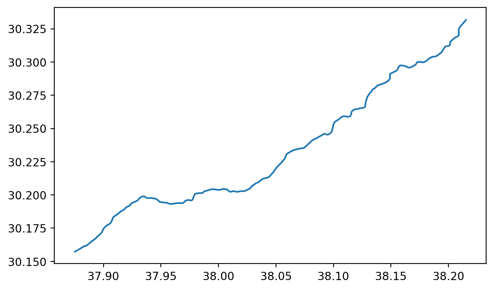

id = 'shortcourse'
data_dir = 'al-jawf'
download_key = 'al-jawf-ndvi'
project_title = 'Irrigation in Saudi Arabia'
start_year = 2001
end_year = 2022
event_year = 2012
address = 'Al Jawf Region'
tag_key = 'boundary'
tag_value = 'administrative'
boundary_dirname = 'al-jawf-region'Vegetation Data Access
Accessing NDVI data
For the vegetation health coding challenge, you used some sample data that we packaged up for you. In this lesson, we’ll go through how we got that data. Give it a try, and then modify it to answer your own scientific question!
STEP 0: Set up
Import libraries
We’ll need some Python libraries to complete this workflow.
Try It: Import necessary libraries
In the cell below, making sure to keep the packages in order, add packages for:
- Working with DataFrames
- Working with GeoDataFrames
- Making interactive plots of tabular and vector data
Reflect and Respond
What are we using the rest of these packages for? See if you can figure it out as you complete the notebook.
import json
import os
import pathlib
import shutil
from glob import glob
import earthpy.api.appeears as eaapp
import earthpy
import hvplot.xarray
import rioxarray as rxr
import xarray as xrSee our solution!
import json
import os
import pathlib
import shutil
from glob import glob
import earthpy.api.appeears as eaapp
import earthpy
import geopandas as gpd
import hvplot.pandas
import hvplot.xarray
import pandas as pd
import rioxarray as rxr
import xarray as xrNext, we’ll set some parameters that are used later on in the workflow. You can use these to customize your workflow, or you can choose to put the values you want directly into your code.
We have one more setup task. We’re not going to be able to load all our data directly from the web to Python this time. That means we need to set up a place for it.
Try It
- Replace ‘my-data-folder’ with a descriptive directory name.
- Run the cell to display your project directory.
- Can you find the directory, either in a terminal or through your operating system’s file browser/explorer/finder?
# Create a project directory in the system data folder
project = earthpy.project.Project(
dirname='my-data-folder')
project.project_dirSee our solution!
# Create a project directory in the system data folder
project = earthpy.project.Project(
dirname=data_dir)
project.project_dir
**Final Configuration Loaded:**
{}PosixPath('/home/runner/.local/share/earth-analytics/al-jawf')Download Study Area
You can use any boundary for your study. One great way to get political boundaries is through the Open Street Map API. Open Street Map is an open-source, editable map of the world – a little like a wiki for places. They also provide a service (or API) for looking up locations using code.
Search online
It can be a little tricky to find the place you want using the OSM API. We recommend that you start out on the Open Street Map (OSM) web page, and search for your site there. Then, you can get key pieces of information you will need to reproducibly find your site area using code.
In this example, we are downloading images to match these images from NASA.
STEP 1B: Search for a nearby landmark
We’ll start by searching for the town of Tubarjal.
STEP 1C: Select the region
We’ll need and area, not just a point, as a site boundary.
Make a note of the name of the region, as well as at least one of the tags, for later.
STEP 0: Import Mapping packages
To access the Open Street Map API, we’ll use the osmnx package.
Try It
Add code to import the other necessary libraries to:
- Create interactive maps and plots
- Save maps and plots to .html files
# Save maps and plots to HTML files
# Create interactive maps and plots
from osmnx import features as osm # Search for locations by nameSee our solution!
import holoviews as hv # Save maps and plots to HTML files
import hvplot.pandas # Create interactive maps and plots
from osmnx import features as osm # Search for locations by nameSTEP 1: Search for a point of interest
You can use the osmnx package to download and search for spatial vector data in your area, or anywhere around the world.
In this case, we’re looking for the location of the United Tribes Technical College campus in North Dakota. The address in here, 'United Tribes Technical College, Bismarck, ND, United States', does not have to be complete or exact, but it should be specific enough to narrow it down.
Tip
You can use the Open Street Maps website to fine-tune your address before you copy it into your code.
With the osmnx library, in addition to the address or place name you are using, you need to supply at least one tag. In this case, we are specifying that we want it to be tagged as a boundary of type administrative. You might have to try a couple different searches with different addresses and/or tags to get the address you want, just like if you are using a map website or app.
Tip
Check out the list of all the different amenity types available on Open Street Maps! Different amenity types might be different types of vector data, such as a point location or a building footprint polygon.
# Search for your site
boundary_gdf = osm.features_from_address(
address,
{tag_key: tag_value},
dist=1000)
boundary_gdf| geometry | admin_level | boundary | name | name:en | type | ISO3166-2 | alt_name:en | alt_name:fr | name:ar | ... | name:ur | name:vi | name:war | name:wuu | name:zh | place | population | population:date | source:population | wikidata | ||
|---|---|---|---|---|---|---|---|---|---|---|---|---|---|---|---|---|---|---|---|---|---|---|
| element | id | |||||||||||||||||||||
| relation | 3842543 | POLYGON ((37.00617 31.50064, 37.01162 31.50183... | 4 | administrative | منطقة الجوف | Al Jawf Region | boundary | SA-12 | Al-Jawf Province | Al Jawf | منطقة الجوف | ... | الجوف علاقہ | Al Jawf | Al Jawf | 焦夫省 | 焦夫省 | state | 440009 | 2010 | stats.gov.sa | Q1471266 |
1 rows × 64 columns
boundary_gdf.plot()
We have a map of ?meta:params.short_name!
STEP 3: Save your OSM download
The Open Street Map API is pretty reliable, and it caches the results automatically to avoid multiple downloads. However, you still might want to save your download, for example to distribute as part of a data release or reproducible workflow.
# Create path for boundary
boundary_path = project.project_dir / boundary_dirname
# Can't overwrite existing files, which seems to be an intractable GDAL issue
if boundary_path.exists():
shutil.rmtree(boundary_path)
# Write OSM result to shapefile
boundary_gdf.to_file(boundary_path)STEP 2: AppEEARS API
Exploring the AppEEARS API for NASA Earthdata access
Before you get started with the data download today, you will need a free NASA Earthdata account if you don’t have one already!
Over the next four cells, you will download MODIS NDVI data for the study period. MODIS is a multispectral instrument that measures Red and NIR data (and so can be used for NDVI). There are two MODIS sensors on two different platforms: satellites Terra and Aqua.
Since we’re asking for a special download that only covers our study area, we can’t just find a link to the data - we have to negotiate with the data server. We’re doing this using the APPEEARS API (Application Programming Interface). The API makes it possible for you to request data using code. You can use code from the earthpy library to handle the API request.
Try It
Often when we want to do something more complex in coding we find an example and modify it. This download code is already almost a working example. Your task will be:
- Replace the start and end dates in the task parameters. Download data from July, when greenery is at its peak in the Northern Hemisphere.
- Replace the year range. You should get 3 years before and after the event so you can see the change!
- Replace
gdfwith the name of your site geodataframe. - Enter your NASA Earthdata username and password when prompted. The prompts can be a little hard to see – look at the top of your screen!
Reflect and Respond
What would the product and layer name be if you were trying to download Landsat Surface Temperature Analysis Ready Data (ARD) instead of MODIS NDVI?
Important
It can take some time for Appeears to process your request - anything from a few minutes to a few hours depending on how busy they are. You can check your progress by:
- Going to the Appeears webpage
- Clicking the
Exploretab - Logging in with your Earthdata account
# Initialize AppeearsDownloader for MODIS NDVI data
ndvi_downloader = eaapp.AppeearsDownloader(
download_key=download_key,
ea_dir=project.project_dir,
product='MOD13Q1.061',
layer='_250m_16_days_NDVI',
start_date="01-01",
end_date="01-31",
recurring=True,
year_range=[, ],
polygon=gdf
)
# Download the prepared download -- this can take some time!
ndvi_downloader.download_files(cache=True)See our solution!
# Initialize AppeearsDownloader for MODIS NDVI data
ndvi_downloader = eaapp.AppeearsDownloader(
download_key=download_key,
project=project,
product='MOD13Q1.061',
layer='_250m_16_days_NDVI',
start_date="06-01",
end_date="09-01",
recurring=True,
year_range=[start_year, end_year],
polygon=boundary_gdf
)
# Download the prepared download -- this can take some time!
ndvi_downloader.download_files(cache=True)Credentials found using 'env' backend.Putting it together: Working with multi-file raster datasets in Python
Now you need to load all the downloaded files into Python. You may have noticed that the `earthpy.appears module gives us all the downloaded file names…but only some of those are the NDVI files we want while others are quality files that tell us about the confidence in the dataset. For now, the files we want all have “NDVI” in the name.
Let’s start by getting all the NDVI file names. You will also need to extract the date from the filename. Check out the lesson on getting information from filenames in the textbook. We’re using a slightly different method here (the .rglob() or recursive glob method, which searchs all the directories nested inside the path), but the principle is the same.
GOTCHA ALERT!
glob doesn’t necessarily find files in the order you would expect. Make sure to sort your file names like it says in the textbook.
# Get a sorted list of NDVI tif file paths
ndvi_paths = sorted(list(project.project_dir.rglob('ndvi-pattern')))
# Display the first and last three files paths to check the pattern
ndvi_paths[:3], ndvi_paths[-3:]See our solution!
# Get a sorted list of NDVI tif file paths
ndvi_paths = sorted(list(project.project_dir.rglob('*NDVI*.tif')))
# Display the first and last three files paths to check the pattern
ndvi_paths[:3], ndvi_paths[-3:]([PosixPath('/home/runner/.local/share/earth-analytics/al-jawf/al-jawf-ndvi/MOD13Q1.061_2001137_to_2022244/MOD13Q1.061__250m_16_days_NDVI_doy2001145000000_aid0001.tif'),
PosixPath('/home/runner/.local/share/earth-analytics/al-jawf/al-jawf-ndvi/MOD13Q1.061_2001137_to_2022244/MOD13Q1.061__250m_16_days_NDVI_doy2001161000000_aid0001.tif'),
PosixPath('/home/runner/.local/share/earth-analytics/al-jawf/al-jawf-ndvi/MOD13Q1.061_2001137_to_2022244/MOD13Q1.061__250m_16_days_NDVI_doy2001177000000_aid0001.tif')],
[PosixPath('/home/runner/.local/share/earth-analytics/al-jawf/al-jawf-ndvi/MOD13Q1.061_2001137_to_2022244/MOD13Q1.061__250m_16_days_NDVI_doy2022209000000_aid0001.tif'),
PosixPath('/home/runner/.local/share/earth-analytics/al-jawf/al-jawf-ndvi/MOD13Q1.061_2001137_to_2022244/MOD13Q1.061__250m_16_days_NDVI_doy2022225000000_aid0001.tif'),
PosixPath('/home/runner/.local/share/earth-analytics/al-jawf/al-jawf-ndvi/MOD13Q1.061_2001137_to_2022244/MOD13Q1.061__250m_16_days_NDVI_doy2022241000000_aid0001.tif')])Repeating tasks in Python
Now you should have a few dozen files! For each file, you need to:
- Load the file in using the
rioxarraylibrary - Get the date from the file name
- Add the date as a dimension coordinate
- Give your data variable a name
You don’t want to write out the code for each file! That’s a recipe for copy pasta and errors. Luckily, Python has tools for doing similar tasks repeatedly. In this case, you’ll use one called a for loop.
There’s some code below that uses a for loop in what is called an accumulation pattern to process each file. That means that you will save the results of your processing to a list each time you process the files, and then merge all the arrays in the list.
Try It
- Look at the file names. How many characters from the end is the date?
doy_startanddoy_endare used to extract the day of the year (doy) from the file name. You will need to count characters from the end and change the values to get the right part of the file name. HINT: the index -1 in Python means the last value, -2 second-to-last, and so on. - Replace any required variable names with your chosen variable names
doy_start = -1
doy_end = -1
# Loop through each NDVI image
ndvi_das = []
for ndvi_path in ndvi_paths:
# Get date from file name
# Open dataset
# Add date dimension and clean up metadata
da = da.assign_coords({'date': date})
da = da.expand_dims({'date': 1})
da.name = 'NDVI'
# Prepare for concatenationSee our solution!
doy_start = -25
doy_end = -19
# Loop through each NDVI image
ndvi_das = []
for ndvi_path in ndvi_paths:
# Get date from file name
doy = ndvi_path.name[doy_start:doy_end]
date = pd.to_datetime(doy, format='%Y%j')
# Open dataset
da = rxr.open_rasterio(ndvi_path, mask_and_scale=True).squeeze()
# Add date dimension and clean up metadata
da = da.assign_coords({'date': date})
da = da.expand_dims({'date': 1})
da.name = 'NDVI'
# Prepare for concatenation
ndvi_das.append(da)
len(ndvi_das)154
Try It
Next, stack your arrays by date into a time series:
- Modify the code to match your prior workflow steps and to use descriptive variable names
- Replace
coordinate_namewith the actual name of the coordinate you want to build up.
# Combine NDVI images from all dates
da = xr.combine_by_coords(list_of_data_arrays, coords=['coordinate_name'])
daSee our solution!
# Combine NDVI images from all dates
ndvi_da = xr.combine_by_coords(ndvi_das, coords=['date'])
ndvi_da<xarray.Dataset> Size: 2GB
Dimensions: (date: 154, y: 1622, x: 2397)
Coordinates:
band int64 8B 1
* x (x) float64 19kB 37.01 37.01 37.01 37.01 ... 41.99 41.99 42.0
* y (y) float64 13kB 31.74 31.74 31.74 31.74 ... 28.37 28.37 28.37
spatial_ref int64 8B 0
* date (date) datetime64[ns] 1kB 2001-01-14 2001-01-16 ... 2022-01-24
Data variables:
NDVI (date, y, x) float32 2GB 0.1039 0.1047 0.1047 ... 0.1364 0.1383Your turn! Repeat this workflow in a different time and place.
It’s not only irrigation that affects NDVI! You could look at:
- Recovery after a national disaster, like a wildfire or hurricane
- Drought
- Deforestation
- Irrigation
- Beaver reintroduction